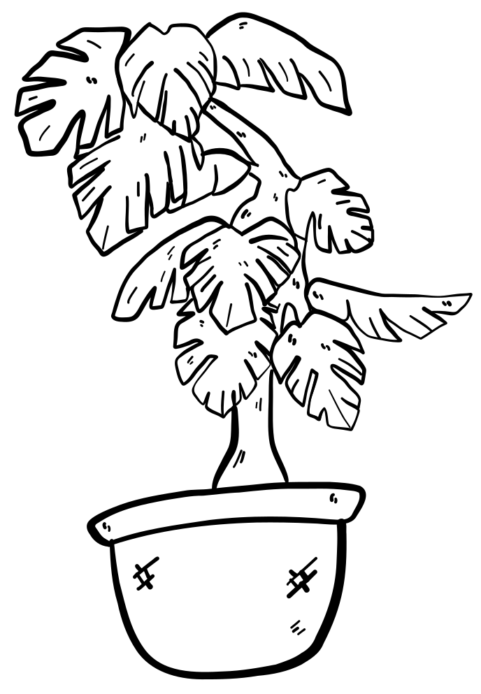
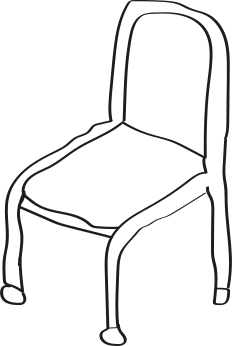
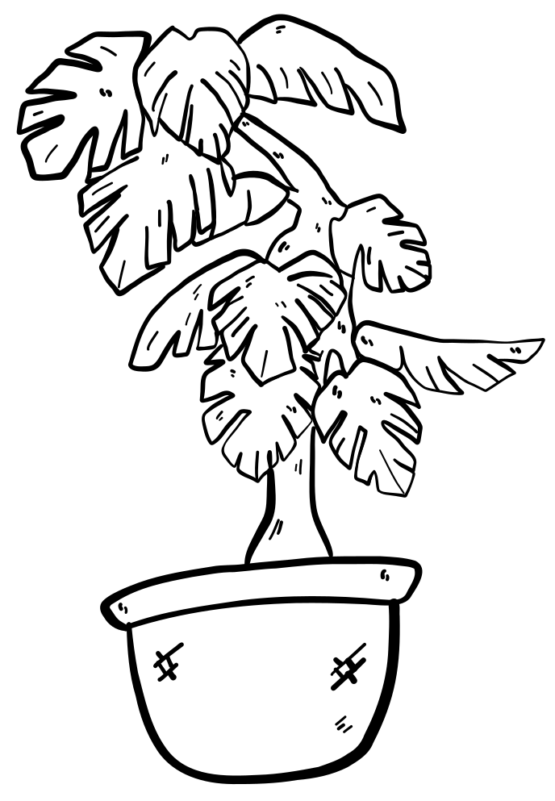
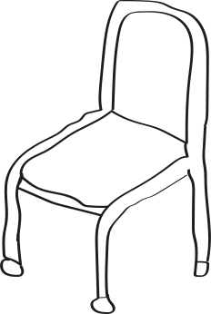

Soutenez-nous

Aidez-nous à prendre un nouveau départ ! Chez Huis van Vrede, nous soutenons non seulement les sans-abri traditionnels, mais aussi les personnes en situation de vie instable et les sans-abri qui ont des difficultés à trouver de l'aide ailleurs. Qu'ils démarrent un projet de logement après une maison d'accueil, qu'ils souhaitent conserver leur logement actuel ou qu'ils sortent de la rue, nous sommes prêts.
Chaque contribution, grande ou petite, nous aide à guider les gens vers une situation de vie stable et un avenir meilleur. Faites un don aujourd'hui et aidez-nous à offrir un logement à tous ceux qui en ont besoin.
Soutenez-nous. Aidez-nous à construire un avenir meilleur.
Don direct Maison de la Paix: BE07 7350 1343 2666.
Autres dons: BE80 7765 9023 3377
Si vous faites un don supérieur à 40 € par an, ce don peut être déductible des impôts. N'oubliez pas de mentionner "Projet préféré n° 2012 Huis van Vrede" avec le don. Le certificat fiscal est délivré par Caritas Hulpbetoon vzw.
Merci beaucoup d'avance!
 


